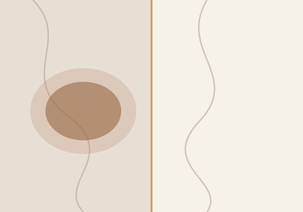
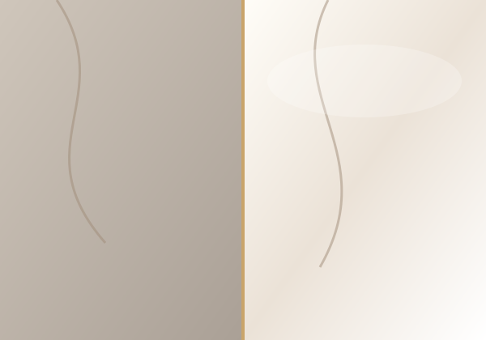
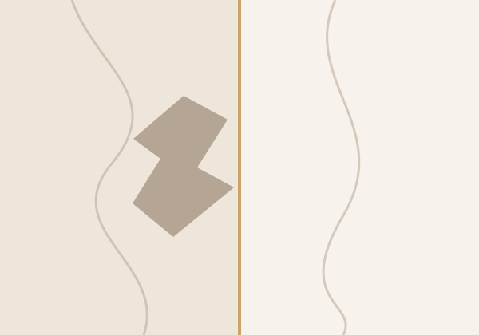
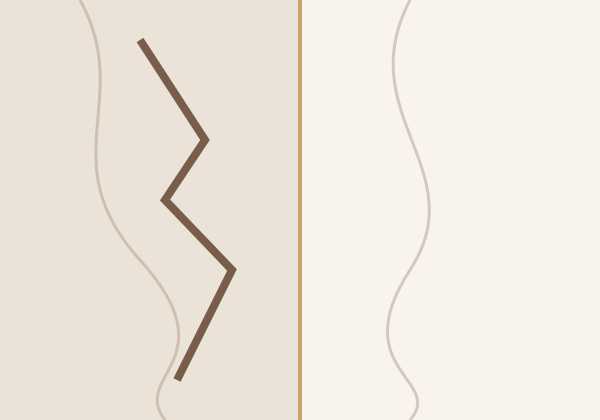
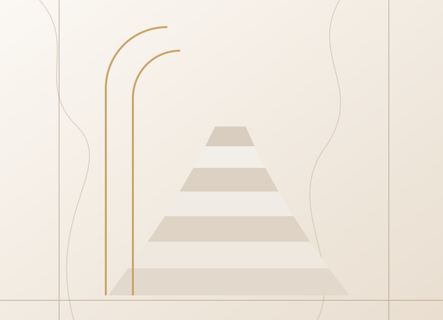
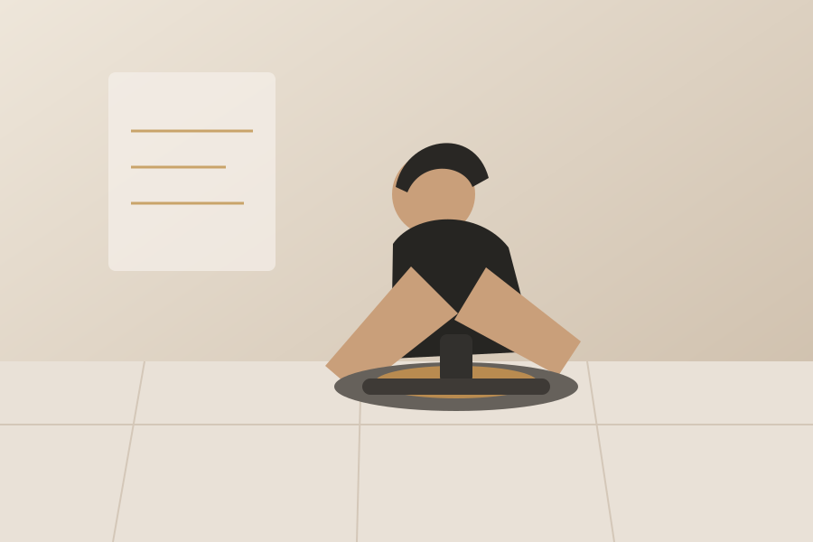

Более 10 лет практики
Опыт восстановления мраморных поверхностей разной сложности.
РЕСТАВРАЦИЯ · ПОЛИРОВКА · РЕМОНТ МРАМОРА
Восстанавливаем внешний вид мраморных поверхностей: удаляем сложные пятна и ржавчину, устраняем сколы, трещины и царапины, шлифуем и полируем камень.
MARMEVIA
Специализируемся на восстановлении мраморных поверхностей и подбираем технологию под конкретное состояние камня.
Опыт восстановления мраморных поверхностей разной сложности.
От деликатной полировки до сложной локальной реставрации.
Пятна, ржавчина, царапины, сколы, трещины и последствия химии.
Предварительно определяем задачу и ориентируем по объёму работ.
Сначала оцениваем состояние поверхности, затем подбираем способ восстановления.
Сложные и въевшиеся загрязнения.
Следы металлических загрязнений.
Тусклая и неоднородная поверхность.
Следы эксплуатации и потёртости.
Повреждённые края, углы и участки.
Локальные дефекты поверхности.
Глубокие локальные повреждения.
Последствия кислот и агрессивной чистки.
УСЛУГИ MARMEVIA
Восстановление блеска и внешнего вида поверхности.
Удаление царапин, потёртостей и повреждённого слоя.
Полный цикл при выраженном износе и нескольких дефектах.
Профессиональная очистка от сложных загрязнений.
Локальная работа с въевшимися и металлическими загрязнениями.
Восстановление матовых участков после кислот и химии.
Восстановление кромок, углов и локальных дефектов.
Восстановление соединений и нанесение защитных составов.
Очистка, локальный ремонт и восстановительные работы.
Работаем с поверхностями: полы · стены · ванные · душевые · лестницы · ступени · столешницы · подоконники · кухонные острова · холлы · входные группы · декоративные элементы.
ДЕМОНСТРАЦИОННЫЕ ПРИМЕРЫ
До появления собственного портфолио здесь показаны визуальные примеры типовых задач. Они не выдаются за реальные объекты MARMEVIA.

Очистка и восстановление однородного внешнего вида.

Выравнивание поверхности и восстановление блеска.

Восстановление формы повреждённого участка.

Ремонт дефекта и финишная обработка.

ЭКСПЕРТНЫЙ ПОДХОД
Мрамор может потерять внешний вид из-за загрязнения, ржавчины, химического травления, механического повреждения или естественного износа. Одинаковая технология не подходит для всех случаев.
ОНЛАЙН-РАСЧЁТ
Ответьте на несколько вопросов — калькулятор покажет ориентировочную стоимость работ.
Расчёт является ориентировочным. Окончательная стоимость определяется после просмотра фотографий или осмотра объекта.
ПОНЯТНЫЙ ПРОЦЕСС
Покажите поверхность и повреждение.
Определяем возможную технологию и ориентир стоимости.
При необходимости мастер уточняет состояние на месте.
Фиксируем объём, ожидаемый результат и стоимость.
Защищаем интерьер и выполняем необходимые работы.
Проверяем поверхность и даём рекомендации по уходу.
ОПЫТ МАСТЕРОВ
Наши мастера имеют более 10 лет практического опыта и работают не только с полировкой, но и со сложным восстановлением повреждённых мраморных поверхностей.
Не обещаем невозможного: заранее объясняем ожидаемый результат и ограничения конкретного повреждения.

FAQ
Коротко отвечаем на вопросы, которые чаще всего возникают перед реставрацией.
Во многих случаях — да. Результат зависит от типа загрязнения, глубины проникновения и состояния камня.
Да. Работаем со следами ржавчины и металлическими загрязнениями; глубокие пятна требуют индивидуальной оценки.
Неглубокие и средние царапины обычно устраняются шлифовкой и последующей полировкой.
Во многих случаях — да. Технология зависит от размера, расположения и причины повреждения.
Да. Мы уделяем особое внимание защите окружающих поверхностей и организации рабочей зоны.
Да. Пришлите общий план и крупные фотографии повреждения — мы предварительно оценим задачу.
Минимальная стоимость выезда и выполнения работ — от 15 000 ₽.
В Москве и Московской области.
ОЦЕНКА ПО ФОТО
Пришлите несколько фотографий поверхности и кратко опишите задачу. На текущей тестовой версии заявка формируется в WhatsApp; фотографии можно прикрепить уже в чате.